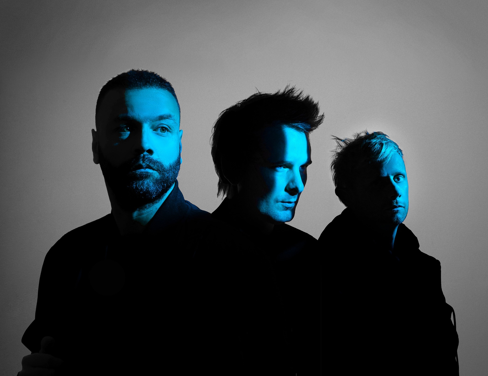

Muse is an English rock band known for their energetic performances and a blend of alternative rock, space rock, and progressive influences.
Muse was formed in 1994 by Matthew Bellamy, Chris Wolstenholme, and Dominic Howard. Their musical style is often described as a combination of alternative rock, progressive rock, and symphonic music.
